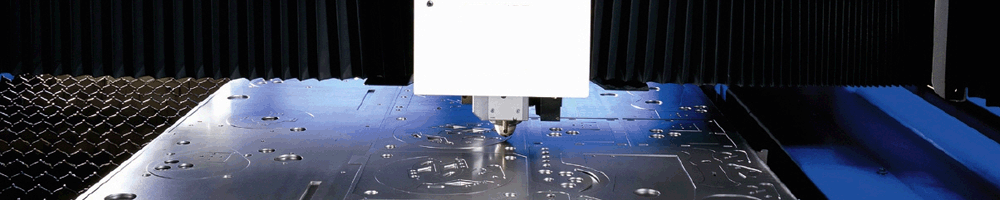

Debitare cu laser
Debitarea cu laser, sau numita mai "popular" taiere cu laser, este o tehnologie care foloseste o raza laser pentru a taia diferite materiale si se foloseste de regula in diverite domenii la nivel industrial insa mai recent, a inceput sa fie folosita si de scoli, intreprinderi mici si mijlocii, dar si de hobyy-isti ( aceasta ultima parte, numite si Steel Design, este tratata intro sectiune dedicata pe site). Taierea cu laser a materialelor poate fi obtinuta prin mai multe procedee in urma contactului laserului cu materialul: materialul poate fi topit, vaporizat, ars insa in oricare caz folosit, suprafata ramasa in urma taierii este una de o calitate si finisare inalta, atat in cazul decuparii de tabla, cat si in cazul taierii tevilor sau a materialelor cu form ne-plana.
In paragrul urmator vom prezenta pe scurt cateva avantaje si dezavantaje pe care taierea cu laser le are comparat cu taierea mecanica a diferitor materiale. Un avantaj major este precizia taierii cu laser, avand in vedere ca materialul nu va fi deformat niciodata de caldura generata de laser ( fiind foarte mica ) comparat cu temperaturile la care ajunge materialul in cazul altor tipuri de taieri. Comparat cu taierea cu plasma a materialelor laserul are avantajul folosirii eficiente a energiei, astfel rezultand in final o cantitate mai mica de energie necesara pentru a taia cu laser. Contrar ideii enuntate anterior, daca se doreste taierea unor materiale de grosimi mari (>22mm), ceea cu de exemplu prin taierea cu plasma este posibil foarte usor, masinile de taiat cu laser asemenea grosimi vor ajunge sa fie propulsate de un consum > 6kW si costurile unui astfel de echipament se ridica mult deasupra unui echipament de taiere cu plasma.
Mai jos prezentam un video cu procesul de debitare cu laser a unor piese intr-un material de tabla INOX (grosime ~15mm)
Avand in vedere cele enuntate mai sus, putem concluziona ca taierea cu laser este tipul de taiere eficient, precis si rapid, cu costuri moderate si accesibile, insa in cazul in care se doreste o taiere indutriala a materialelor de grosimi foarte mari, se poate lua in considerare si o taiere cu plasma, cel putin la momentul actual cand producatorii de echipamente laser nu au ca si target piata industriala cu acesta nevoie. Putem fi sigur ca in viitorul nu foarte departat utilaje de decupare tabla cu laser, chiar si tabla de grosimi mari vor fi accesibile si vor fi alegerea inteligenta si din punct de vedere al consumului, resutl aspectelor fiind considerate si la ora actuala avangaje ale debitarii cu laser asupra debitarii mecanice a materialelor.
Producatori utilaje laser
- Trumph
Numarul 1 mondial - Bystronic
Un partener competent in prelucrarea cu laser - Prima Industrie
30 de ani de inovatie